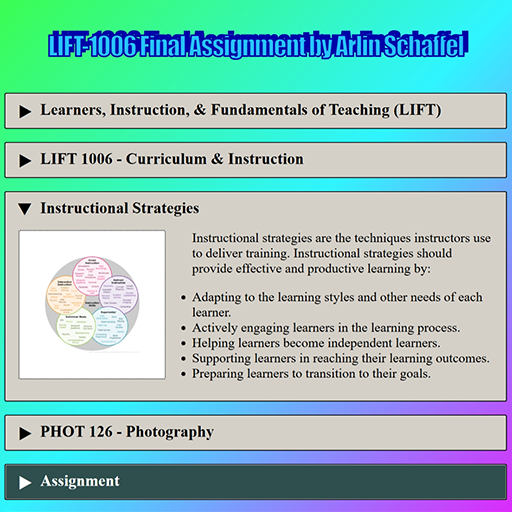

Curriculum Development

The Curriculum Development competency focuses on adhering to the curriculum guidelines outlined in our Saskatchewan Polytechnic Curriculum Framework. It also addresses best practices when creating learning outcomes and learning steps, preparing learning activities and resources, and revising curriculum.

(Click to View)
Instructional Strategies
As part of LIFT-1006 Curriculum & Instruction in May 2024, I planned how to use different instructional strategies to engage my learners in meeting specific learning outcomes.
Instructional strategies were things I had already been using intuitively, but I didn not have clear terminology for. Different students and cohorts respond to different strategies. Learning about and understanding the different strategies has given me a more diverse set of tools to bring to the classroom.
In the assignment, I examined a photography course I teach and developed several new activities. I think the course will be more interesting and engaging with these additions, and it will better support a wider range of learning styles.
Courses Developed and Updated
In the nearly five years I have been at Saskatchewan Polytechnic, I have had many opportunity develop and update courses. The LIFT program has been particularly helpful in strengthening my approach to curriculum design and course development. I currently serve as the course lead for eight courses in the Interactive Design & Technology program.
Courses Updated:
Most updates have focused on modernizing content, adding new techniques that have been introduced, and removing outdated content. I've updated almost every single assessment, added quizzes, and collaborated with colleagues.
- MULT-120 - Web Development 1 (Basic HTML/CSS)
- MULT-124 - Web Development 2 (Advanced HTML/CSS)
- MULT-114 - Web Development 3 (Intro to JS)
- MULT-128 - Web Development 4 (Libraries/Frameworks)
- MULT-213 - Web Development 5 (Async JS/Web Apps/React)
Courses Created:
There were several gaps in our program based on industry needs. I developed these courses in response to industry needs and have continued refining them as the program evolves.
- COMP-265 - Introduction to Mobile Application Development (React Native)
- COMP-264 - Version Control (Git/GitHub)
Developing and revising these courses has reinforced the importance of keeping curriculum aligned with industry practices while maintaining strong foundational skills for students.